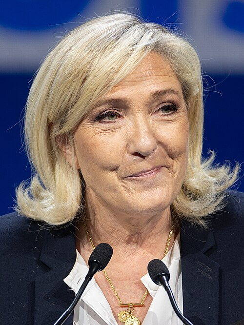

Marine Le Pen

Présentation
Marine Le Pen est une femme politique française ayant dirigé le Front National, puis le Rassemblement National de 2011 à 2021. Fille de Jean-Marie Le Pen, figure contestée de l'extrême-droite et fondateur du parti, elle s'y engage à partir de 1986. Entre 2004 et 2017, elle siège au Parlement européen. Marine Le Pen s'est présentée aux élections présidentielles de 2012, de 2017 et de 2022. En 2025, elle est reconnue coupable pour détournements de fonds. Elle a depuis fait appel.
Désignation
- La candidate du Rassemblement national
- La triple candidate à l’élection présidentielle
- Le Pen
- Marine
- Marine Le Pen
- Présidente du Front national
- Une blonde qui présente bien
Occurrences dans les articles
Pour l'affaire Jeanne
- Libération 2015 (2)
- Libération 2020 (4)
- Le Monde 2015 (11)
- Le Monde 2019 (3)
- Le Figaro 2019 (4)
- Figaro 2015 (5)
Pour l'affaire des menaces contre les juges
- Le Figaro 2025 (1)
- Libération 2025 (10)
- Le Monde 2025 (6)
Citations
Citations prononcées
- Je persiste à vous dire que nous n'avons rien à nous reprocher
- affirme qu'elle et ses proches n'ont «rien à se reprocher».
- Le système a sorti la bombe nucléaire
- Et s'il utilise une arme aussi puissante contre nous, c'est évidemment parce que nous sommes sur le point de gagner des élections.»
- Ils nous ont volé les législatives [en raison du désistement républicain], que les choses soient claires, on ne se laissera pas voler la présidentielle.
- Cet appel [...], c'est aussi une menace !
- «juge de première instance», prend-elle toujours soin de préciser avec mépris
- tyrannie des juges
- dénonçant une « décision politique » et en accusant le tribunal correctionnel de Paris de « l’empêcher de pouvoir être élue présidente de la République ».
- L’ingérence de ces magistrats dans le processus électoral suprême qui est celui de l’élection présidentielle, voilà où est le trouble à l’ordre public.
Ce qu'on en dit
- Jordan Bardella : Sauvons la démocratie, soutenons Marine», [Jordan Bardella appelle aussi à] une mobilisation populaire et pacifiques.
- Jordan Bardella : Des juges ont décidé d’éliminer purement et simplement de la course à la présidentielle la candidate du Rassemblement national
- Gérald Darmanin : serait profondément choquant que Marine Le Pen soit jugée inéligible et ainsi ne puisse pas se présenterdevant le suffrage des Français
- Magistrat parquet : dans ce dossier, les faits sont accablants et graves, pour Marine Le Pen et son parti Cela ne fait aucun doute pour personne. Pourquoi, alors, avoir voulu politiser le jugement ?
- Maoulida : Le voir assis à côté de Marine Le Pen a été un choc
- Soly : Avant, Le Pen, c'était le diable, aujourd'hui on a une blonde qui présente bien, mais on sait que les idées sont les mêmes.